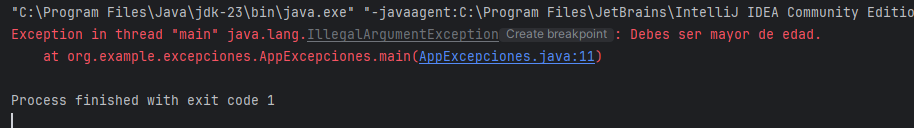
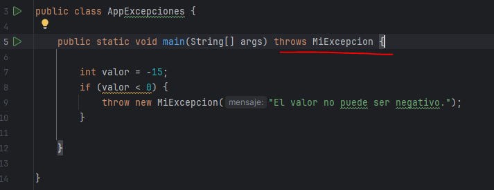
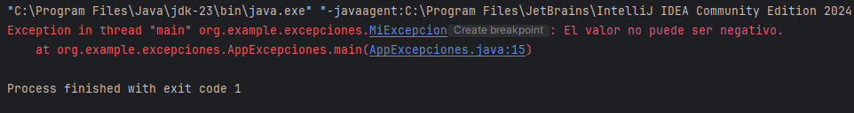

Las excepciones en Java son eventos anómalos que pueden ocurrir durante la ejecución de un programa y que alteran el flujo normal de ejecución. Como ya hemos visto durante el curso, estos eventos representan situaciones inesperadas o errores que deben ser manejados de manera adecuada para garantizar que el programa continúe ejecutándose y evitar interrupciones.
Este manejo de excepciones en una aplicación es muy importante para una buena experiencia de usuario, ya que permite que la aplicación continúe funcionando a pesar de errores predecibles y proporciona información útil al usuario para corregir el problema.
Uso de throw para lanzar excepciones manualmente
public class AppExcepciones {
public static void main(String[] args) {
int edad = 10;
if (edad < 18) {
throw new IllegalArgumentException("Debes ser mayor de edad.");
}
}
}
Creación de Excepciones personalizadas
Hasta ahora, hemos visto excepciones típicas como NullPointerException, ArrayIndexOutOfBoundsException, ArithmeticException,... Pero es posible que un programa requiera una excepción específica que todavía no existe. Para crearla, podemos usar una clase nueva que herede de Exception o RuntimeException:
public class MiExcepcion extends Exception {
public MiExcepcion(String mensaje) {
super(mensaje);
}
}Y podemos lanzarla desde cualquier método, siempre y cuando incluyamos en la cabecera la palabra "throws" y el nombre de la excepción que puede darse dentro de él. En nuestro caso, MiExcepcion:
public class AppExcepciones {
public static void main(String[] args) throws MiExcepcion {
int valor = -15;
if (valor < 0) {
throw new MiExcepcion("El valor no puede ser negativo.");
}
}
}

Esta forma de crear excepciones nos vale para controlar varios tipos de errores, ya que la excepción lanzará el mensaje que nosotros le pasemos. Pero si por algún motivo quisiéramos tener excepciones separadas, una para cada tipo de error, podríamos no pasar ningún mensaje como parámetro y asignarlo cuando llamemos al constructor de MiExcepcion directamente:
public class MiExcepcion extends Exception {
public MiExcepcion() {
super("El valor no puede ser negativo.");
}
}Y desde el método que provoca la excepción, la llamada no enviaría ningún mensaje:
public class AppExcepciones {
public static void main(String[] args) throws MiExcepcion {
int valor = -15;
if (valor < 0) {
throw new MiExcepcion();
}
}
}Vale... ¿y por qué si lanzo una excepción que ya existe no pongo throws en la cabecera y si lanzo una personalizada sí?
La diferencia radica en si la excepción es comprobada (Checked) o no comprobada (Unchecked). Cuando hemos creado la excepción personalizada hemos heredado de Exception, lo que la convierte en una Checked Exception y obliga a usar throws (o controlarla con un try-catch). Este tipo de excepciones son las que no podemos controlar, como acceso a bases de datos caídas (SQLException) u otros tipos de errores que como programadores sabemos que pueden pasar pero no sabemos cuándo.
Por otro lado, las Unchecked Exceptions heredan de RuntimeException (errores que pasan durante la ejecución del programa y que normalmente provoca el usuario, como introducir un formato erróneo de algún dato) y no requieren throws en la cabecera del método, porque el compilador no obliga a manejarlas (pero es más que recomendable).
Por lo tanto, si extendemos Exception (Checked Exception) debemos usar throws en la firma del método. Si extendemos de RuntimeException (Unchecked Exception) no necesitamos throws.